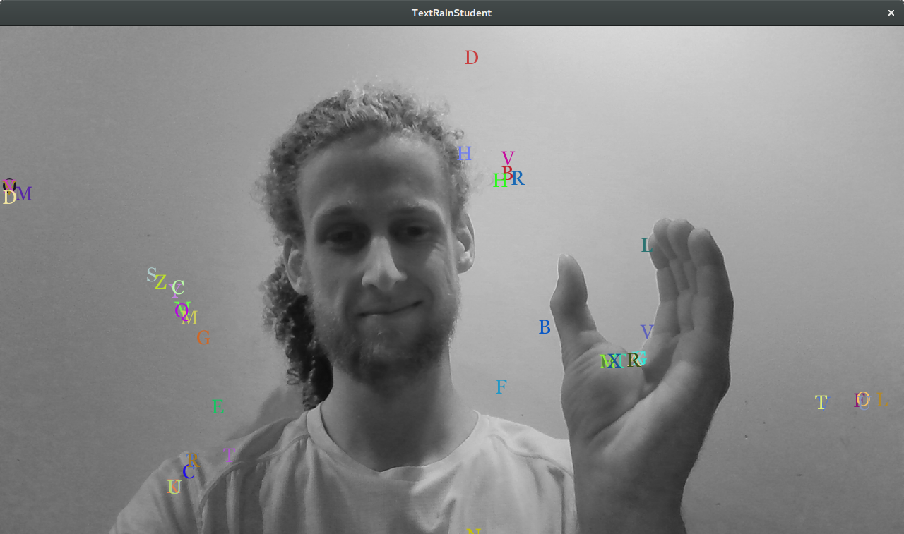
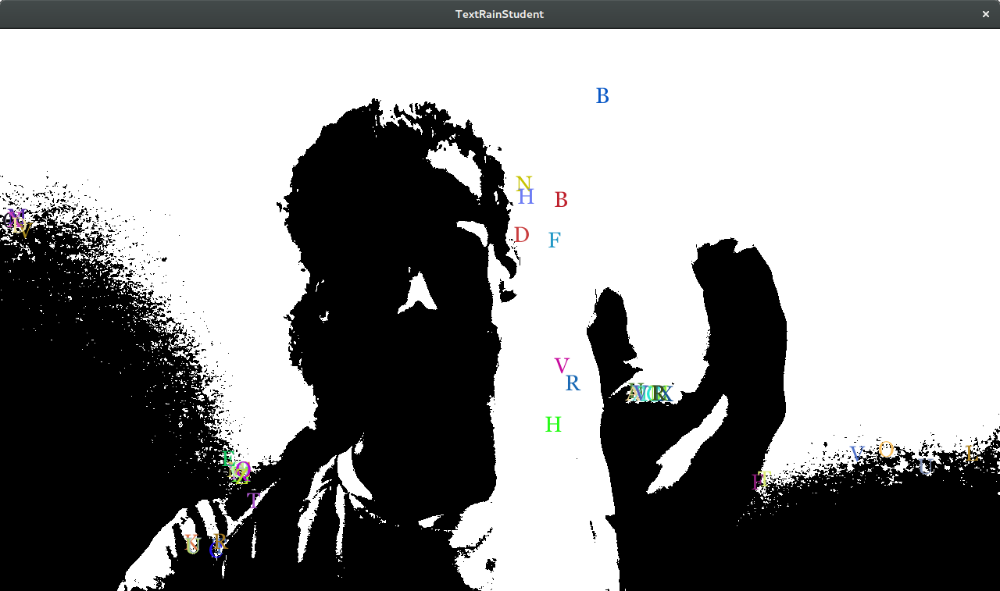
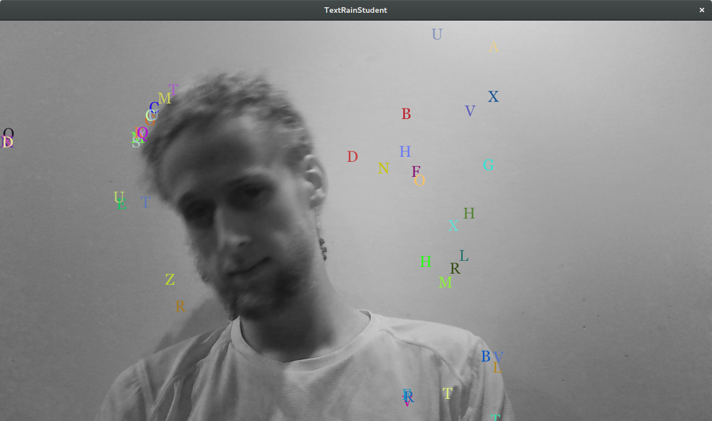
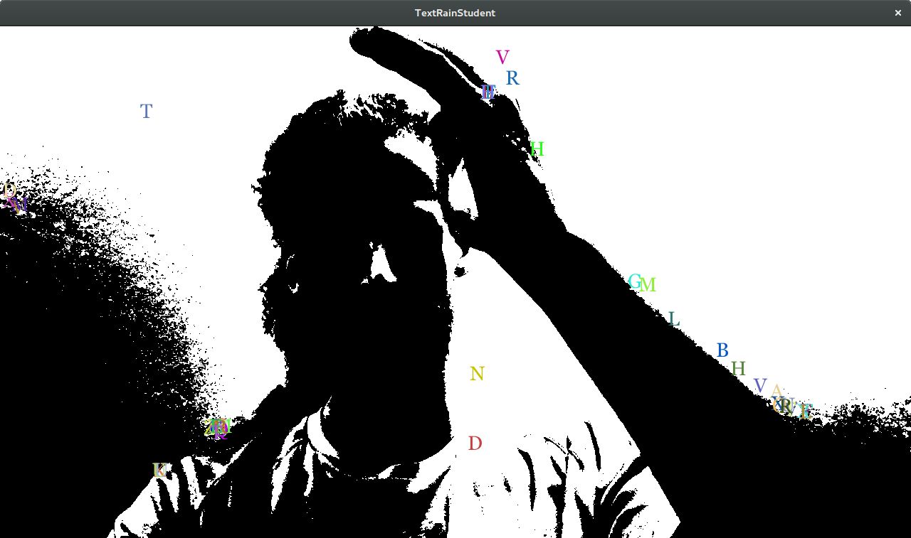

Text Rain
Description
This was the first assignment in my Graphics and Games class in spring 2016. The goal was to recreate "Text Rain", which was an interactive program done by Camille Utterback and Romy Achituv back in 1999. This recreation uses your webcam to capture video of the user. Alphabet letters randomly rain down from the sky, and will interact with the user, as if they were an object in the program. So, the user can "catch" letters and play around with them.
Code
Go to Github page
Tools Used
- Processing 3 for the whole program
Features
- Reading webcam input
- Image processing: mirroring the image, and converting to grayscale
- Interaction from the webcam video and text. This is done by not allowing the text into pixels that are below a certain brightness threshold
- Simulated gravity. If the text is on a sloped surface, it will slide down slowly
- Option to load different webcam options or a test video in the beginning menu
Images:



